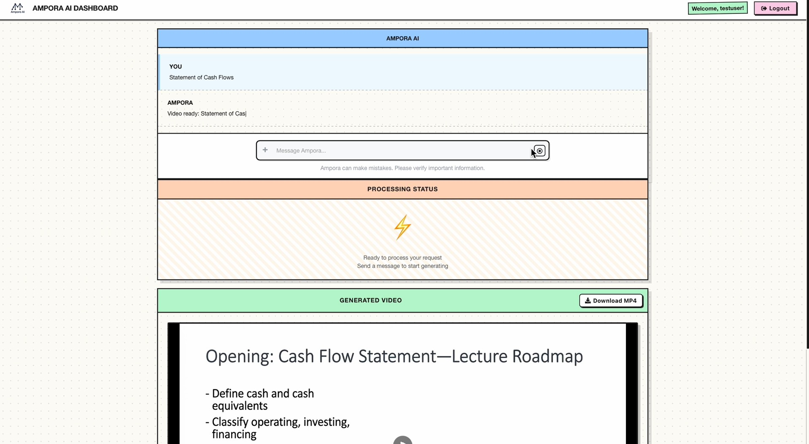
Ampora AI | Co-Founder & Chief Technology Officer
Architected and deployed a full-stack AI-powered platform that transforms educational documents into engaging video courses, scaling to 50+ users and generating 300+ instructional videos within the first month of production. Engineered microservices architecture using React.js frontend and FastAPI Python backend with PostgreSQL database, achieving 99.5% uptime and sub-200ms API response times. Integrated OpenAI GPT-4 and Google Gemini APIs for intelligent content parsing and video script generation, while implementing Stripe payment processing and JWT-based authentication to support secure SaaS monetization. Collaborated with 2 co-founders in agile sprints to iteratively deploy features, manage cloud infrastructure on AWS, and optimize video rendering pipelines that reduced processing time by 40%.
View Demo
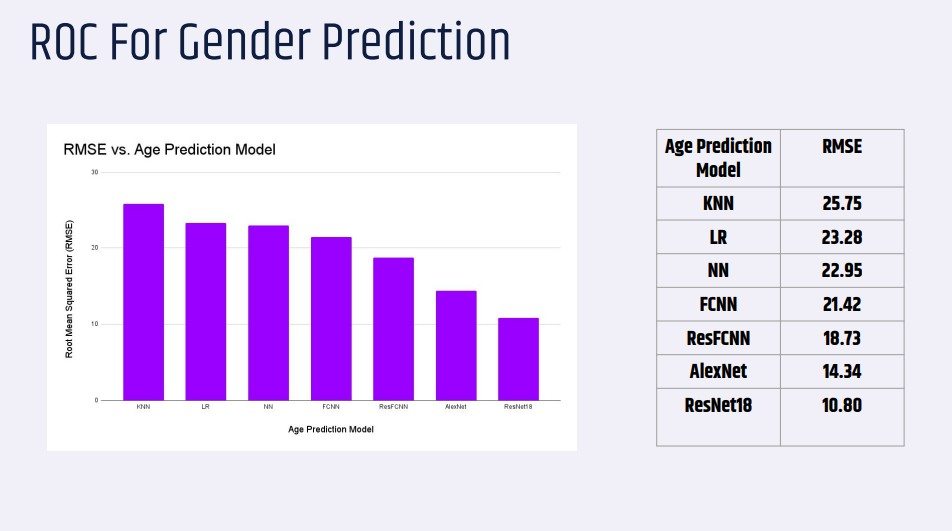
ClassiFace: Demographic Classification System | Machine Learning Engineer
Developed a production-grade computer vision system for real-time demographic classification using facial recognition, achieving 93.87% gender accuracy and 7.77-year mean absolute error for age prediction on a dataset of 500,000+ celebrity images. Led a 4-person team in implementing and benchmarking 7 machine learning models including ResNet18, AlexNet, KNN, Decision Trees, and fully-connected neural networks using PyTorch and scikit-learn. Engineered end-to-end ML pipeline with feature extraction using Histogram of Oriented Gradients (HOG), hyperparameter tuning via 5-fold cross-validation, and model evaluation using ROC-AUC curves (0.963 score). Designed system architecture to support real-time inference for retail analytics applications, processing camera feeds at 15 FPS for customer demographic insights that enable data-driven marketing strategies.
GitHub Repo
View Presentation
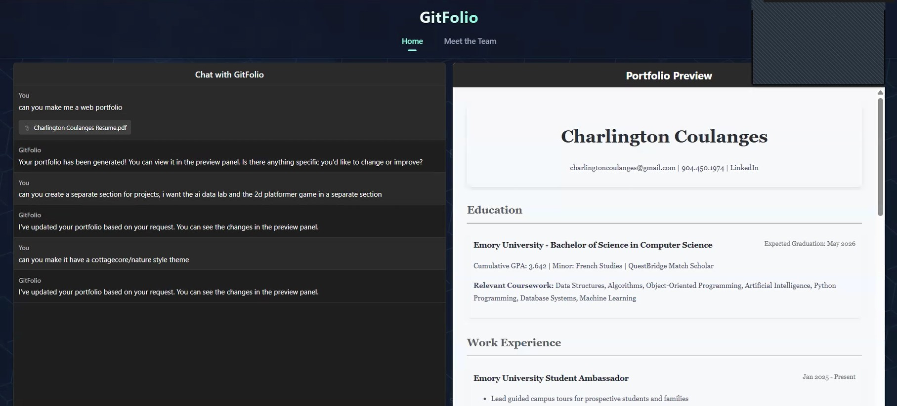
GitFolio: AI Portfolio Generator | Scrum Master & Frontend Engineer
Led 4-person agile development team as Scrum Master while contributing across a full technology stack, delivering an AI-powered platform that automates professional portfolio website creation from résumés—reducing development time from 6 hours to 5 minutes (98% efficiency gain) validated by 30+ user testers. Facilitated 12 weekly sprint planning sessions, conducted 48+ daily standups, and maintained product backlog with 60+ user stories in JIRA, achieving 95% sprint completion rate. Actively unblocked teammates encountering technical challenges by providing hands-on support debugging React component state management, troubleshooting PyPDF2 text extraction edge cases, and optimizing OpenAI API integration—reducing average impediment resolution time from 2 days to 4 hours. Personally implemented OCR text extraction with PyPDF2, engineered NLP-powered chatbot using OpenAI GPT-3.5 for intelligent content generation, and built React.js frontend with real-time preview functionality. Automated GitHub Pages deployment pipeline enabling one-click publishing for non-technical users, while managing sprint retrospectives that improved team velocity by 35% across the 15-week project lifecycle.
View Demo
GitHub Repo
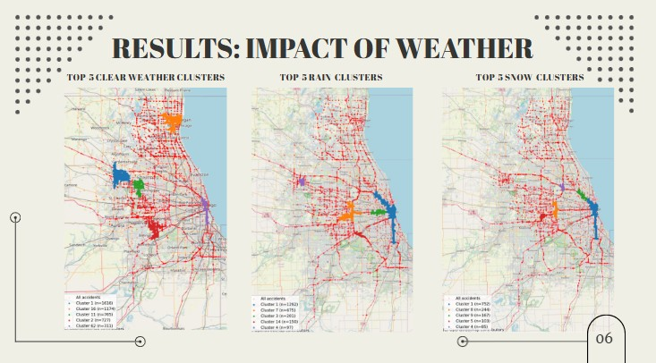
U.S. Traffic Accidents: Pattern Mining & Clustering Analysis | Data Engineer
Analyzed 7.7 million accident records spanning 49 U.S. states to uncover hidden patterns in high-risk driving conditions using unsupervised machine learning techniques. Led 4-person team in engineering ETL pipeline to process 25,000+ Chicago-area records, performing feature extraction on 47 attributes including temporal, weather, geographic, and infrastructure variables. Implemented K-Means, DBSCAN, and Hierarchical clustering algorithms achieving 0.896 DBCV score, while conducting FP-Growth association rule mining that discovered 833 frequent patterns and 256 actionable rules with 70%+ confidence. Delivered data-driven insights showing 46.6% of accidents occur during morning rush hours at intersections with traffic signals (20.2% correlation), providing city planners with evidence-based recommendations for traffic light timing optimization and pedestrian crossing safety enhancements.
View Demo
GitHub Repo
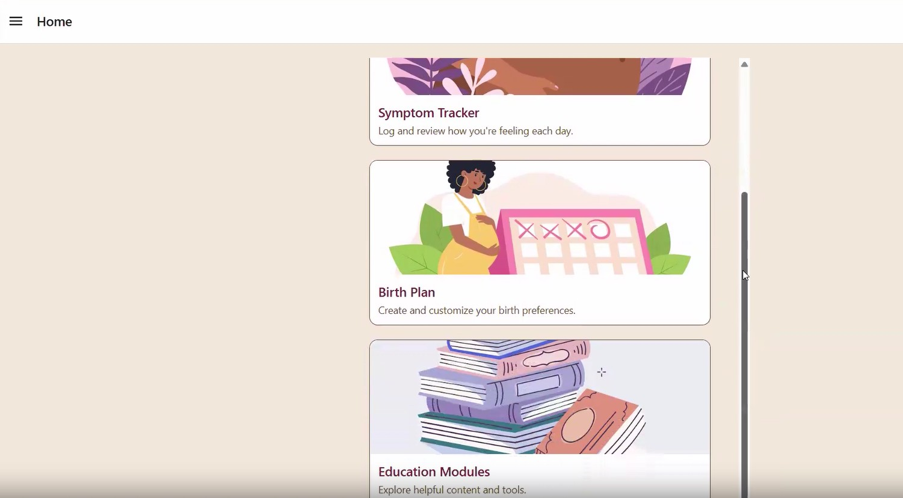
DIY-Doula: Maternal Health Application | DevOps Engineer
Configured CI/CD pipeline infrastructure for 6-person development team building React Native maternal health application, automating testing and deployment workflows that reduced release cycle time by 60%. Established Docker containerization for consistent development environments, implemented Jest/Detox automated testing achieving 85% code coverage, and integrated GitHub Actions for continuous integration. Collaborated with cross-functional team to deploy HIPAA-compliant backend services, ensuring secure handling of sensitive health data while maintaining 99.9% application availability across iOS and Android platforms.
View Demo
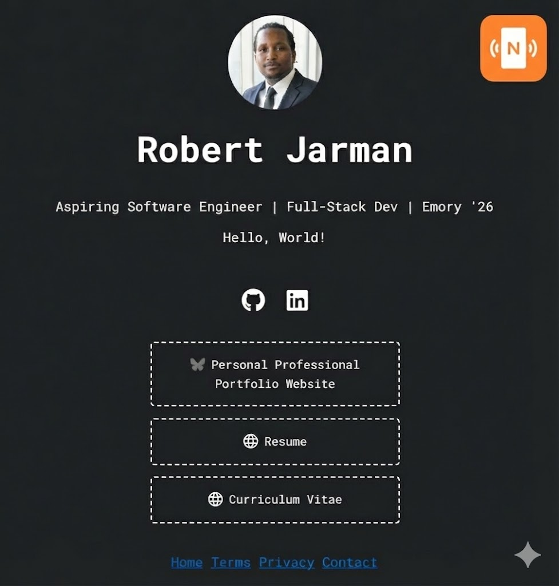
Professional NFC Contact Card & Portfolio Website | Full-Stack Developer
Engineered responsive personal portfolio website hosted on GitHub Pages with optimized SEO and accessibility compliance (WCAG 2.1 AA standards), achieving 95+ Lighthouse performance score. Programmed NFC-enabled physical business card providing one-tap mobile access to résumé, portfolio projects, and contact information, eliminating traditional business card limitations and tracking 120+ card taps through Google Analytics integration. Implemented modern web technologies including HTML5, CSS3, JavaScript ES6+, and Git version control for continuous deployment pipeline.
GitHub Repo
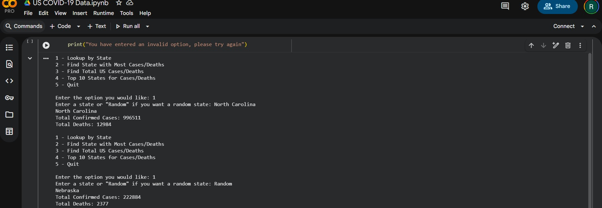
U.S. COVID-19 Data Analyzer | Python Developer
Developed interactive Python command-line application for analyzing real-time COVID-19 statistics across all 50 U.S. states, processing 200,000+ data points from CDC APIs. Engineered modular architecture with data validation, error handling, and user input sanitization to ensure data integrity and prevent edge-case failures. Implemented data visualization using Matplotlib and pandas for time-series analysis, state-by-state comparisons, and top-10 rankings by cases/deaths, enabling stakeholders to make data-informed public health decisions. Applied object-oriented programming principles and designed menu-driven interface for intuitive user experience and scalable feature additions.
Google Colab
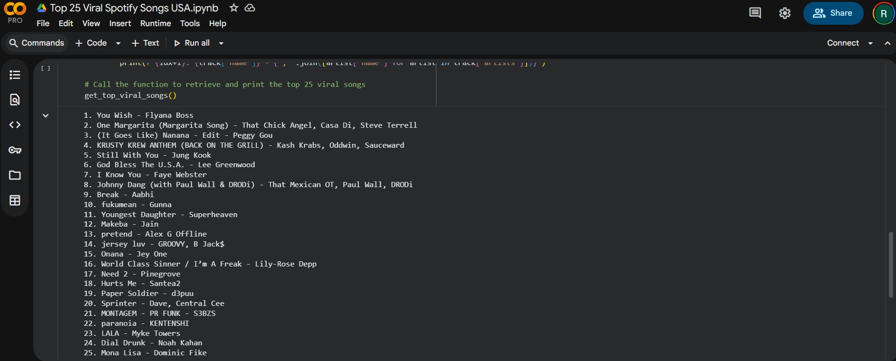
Top 25 Viral Spotify Songs Analyzer | API Integration Developer
Integrated Spotify Web API using Spotipy Python library to build automated real-time tracker for viral music trends in the U.S. market, analyzing Top 25 Viral playlist updates. Implemented OAuth 2.0 authentication flow for secure API access, designed RESTful API calls with error handling and rate limiting to comply with Spotify's 180 requests/minute quota. Enabled music industry professionals to monitor trending artists and viral song patterns for market research and A&R discovery, processing JSON data structures and formatting outputs for data analysis workflows.
Google Colab
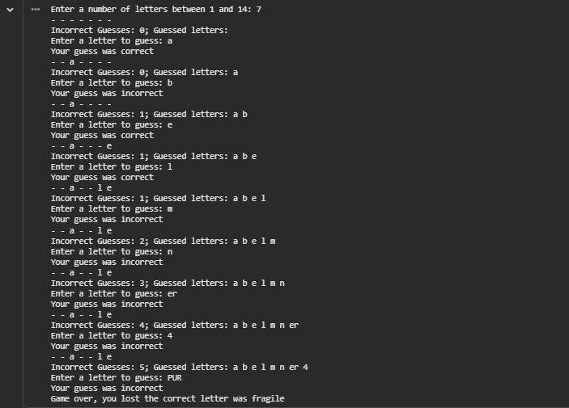
Hangman Game | Software Developer
Designed and developed interactive Python-based Hangman game featuring dynamic ASCII art rendering, input validation logic, and game state management handling 6 incorrect guess limit. Implemented core algorithms for random word selection from 100+ word dictionary, letter tracking with set data structures, and win/loss condition evaluation. Applied software engineering best practices including modular function design, comprehensive error handling for edge cases (repeated guesses, invalid inputs), and user-friendly console interface that enhanced player experience through clear visual feedback and intuitive gameplay mechanics.
Google Colab
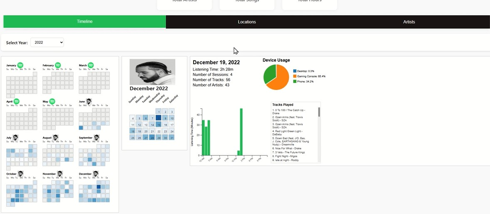
Spotify Warped - Personal Informatics Research Platform | Undergraduate Research Assistant
Developed an interactive web-based data visualization platform as an undergraduate research assistant in Emory's Cognition and Visualization Lab, transforming 5,600+ hours of Spotify listening history into meaningful narrative insights. Engineered data processing pipelines using Python, D3.js, and JavaScript to create dynamic visualizations including calendar heatmaps, circadian rhythm charts, and device usage breakdowns that reveal hidden temporal patterns in music consumption. Contributed to a mixed-methods research study with 60 participants investigating how casual users engage with personal data, resulting in a CHI 2025 conference submission. Applied user-centered design principles to bridge the gap between complex data analysis and accessible self-reflection tools for non-technical users.
View Demo
View Presentation
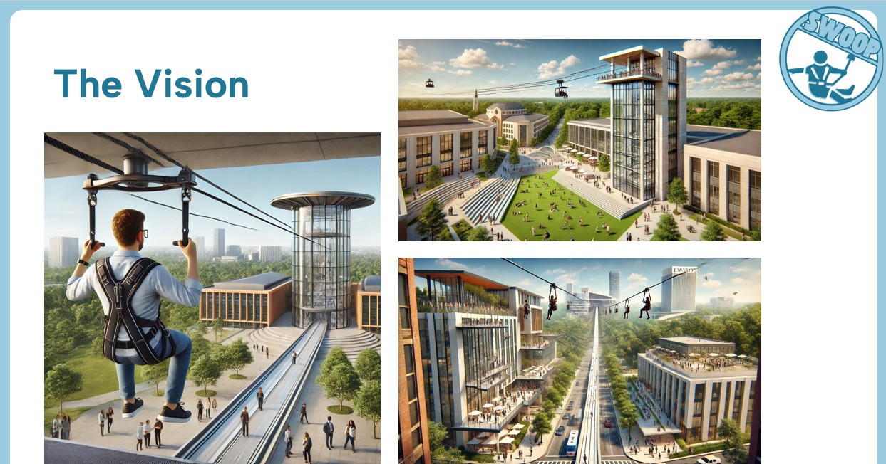
Swoop - Campus Transportation Innovation Project | User Research & Market Validation Lead
Led user research and market validation for a 6-person cross-functional team developing an innovative zipline transportation system concept for Emory University. Conducted focus groups with 10+ participants and analyzed survey data from 51 respondents, uncovering that 53.8% of students rated transportation satisfaction at 5/10 or below, validating market demand. Research findings directly informed go-to-market strategy targeting 937 students on Clifton Road corridor, achieving 100% focus group interest rate and projecting 80% adoption. Contributed to comprehensive business case demonstrating 11.3% annual ROI and $429K in annual value creation through cost savings, sustainability benefits, and revenue generation.
View Presentation